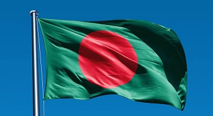

Bangladesh at a Glance
About Bangladesh
- Capital: Dhaka
- Dialing code: +880
- Population: 163 million (2019) World Bank
- Currency: Bangladeshi Taka
- President Name: Abdul Hamid
Division of Bangladesh
Total Eight divisions of Bangladesh as found in the 2011 Population and Housing Census conducted by the Bangladesh Bureau of Statistics.
- Dhaka Division
- Mymensingh Division
- Rajshahi Division
- Rangpur Division
- Sylhet Division
- Chittagong Division
- Barisal Division
- Khulna Division
Culture of Bangladesh
Bangladesh is a unique example of multicultural country where along with the 98% Bengali population there are at least 45 small ethnic groups who possess different cultures like their own language, food habit, dress, music etc
Religion of Bangladeshh
Main religion of the Republic is Islam.*But the State shall ensure equal status and equal rights in the practice of the Hindu, Buddhist, Christian, and other religions.
Tourism in Bangladesh
- Historic Mosque City of Bagerhat
- Ruins of the Buddhist Vihara
- Sundarbans
- Halud Vihara
- Jaggadala Vihara
- Lalbagh Fort
- Mahansthangarh and its Environs
- The Lalmai-Mainamati Group of monuments
Flag of Bangladesh
Subscribe Us
For more details please contact our social media page